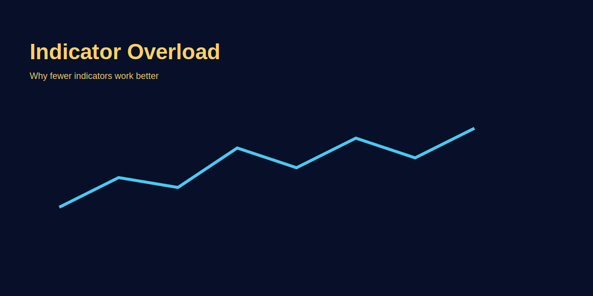

Indicator Overload Mistakes
Intro — problem
Indicators can give conflicting signals; over-reliance causes analysis paralysis. Here’s how to avoid it.
Step-by-step
- List indicators you use and why.
- Backtest each combination on historical GOLD charts.
- Remove correlated indicators—keep orthogonal signals only.
Real trading logic (XAU/USD)
Using SMA + RSI often duplicates momentum signals; prefer SMA + Volume or SMA + ATR for volatility-aware entries on GOLD.
Image examples
Common mistakes
- Stacking multiple momentum indicators expecting different outcomes.
- Overfitting parameter values to past data.
Pro tips
- Use one indicator per decision type (trend, momentum, volatility).
- Keep a testing log for indicator combos and market regimes.
Risk warning
Indicators don't predict; they quantify past behavior. Use size and stops.
FAQs
- Kaunse indicator sabse useful hain?
- Depends on strategy—trend use MA, momentum use RSI, volatility use ATR.